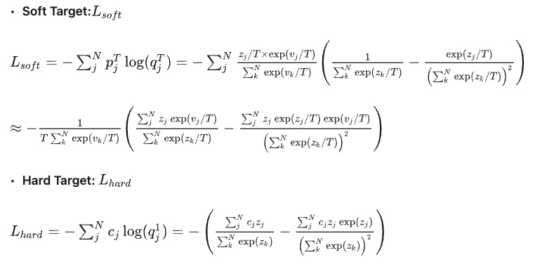
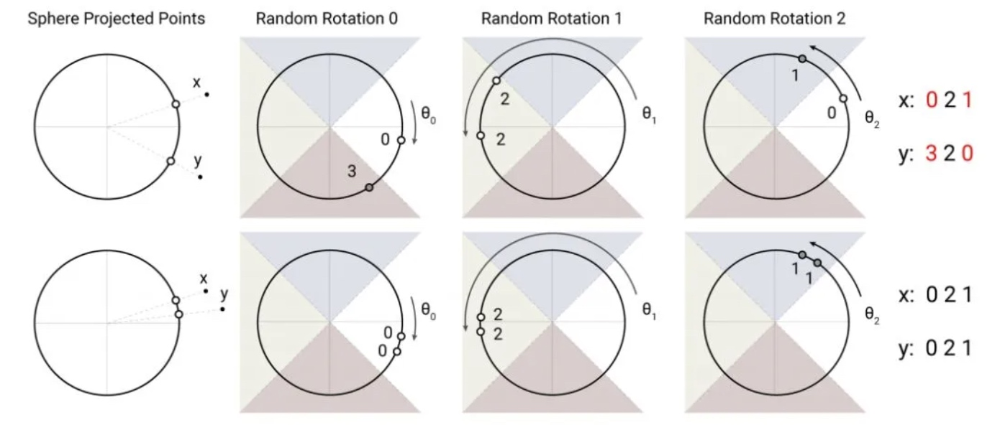

1 结构框架图
Encoder-only 结构：利用 Transformer 结构构造了一个多层双向的 encoder 网络。
为什么是双向？
因为 bert 相当于只用了 transformer 的 encoder 结构，而在 encoder 过程中，网络通过自注意力机制可以学习到输入单词序列中任意两个单词之间的关系，因此是双向的。
两种输出：
pooler output：对应 [CLS] 的输出，可以用于分类 / 回归任务。
sequence output：对应序列所有字的最后一层 hidden 输出，可以用于序列任务。
框架：Pre-training + Fine-tuning
- 预训练：预先训练的一个模型或指预先训练模型的过程。
- 微调：将预训练过的模型作用于自己的数据集，并使参数适应自己的数据集的过程。
作用：相对于从头开始训练，省去大量计算资源和计算时间，减少了因为自己数据质量数量较差导致的过拟合风险。
2 框架实现
2.1 输入层
-
输入被改造为：[CLS]+seq_A(+[SEP]+seq_B+[SEP])
-
三个 Embedding：
-
Token Embedding：将词语转化为对应的向量表示。
-
Segment Embedding：需要对不同的句子组合进行分类。
-
Position Embedding：用随机生成且可训练的向量来进行位置编码。
-
将三个编码相加得到最终的输入。
2.2 中间层
与 Tranformer 的 encoder 层一样。包括 Self-attention、Add&Norm 和 FeedForward。
2.3 输出层
两类输出，对应两类任务。
3 Pretraining 的两个 Mask
3.1 Mask Language Model
随机 mask 输入的几个词，然后预测它们。
问题：在 Fine tuning 阶段并没有 [MASK] 这个 token，导致预训练和微调不匹配。
措施：对于 15% 被 mask 的 tokens：
- 80% 替换为[MASK]
- 10% 替换为随机的 token
- 10% 保持不变
3.2 Next Sentence Order
预测下一句是否和上一句话有关。
对于 A 句和 B 句：
- 50% 概率是上下句，不变；
- 50% 概率不是上下句的，从其他的文档中，加入新的连续句子作为 B。
4 Fine-tuning 的四个 Task
- 句子对分类任务；
- 单句子分类任务；
- 问答任务；
- 命名实体识别任务。
5 改进措施
针对模型大、训练慢，采取以下几个措施进行缓解：
5.1 模型压缩——知识蒸馏
5.1.1 含义
基于“教师 - 学生网络思想”：将已经训练好的模型包含的知识，蒸馏提取到另一个模型里面去。
- 原始 teacher 模型 (Net-T) 训练，模型复杂。要求：对于输入 X，可以输出 Y
- 精简 student 模型 (Net-S) 训练，模型简单。要求：对于输入 X，都能输出 Y
5.1.2 理论
**5.1.2.1 迁移泛化能力 **
使用 Softmax 层输出的类别的概率作为“soft target"：
该训练方式使得每个样本给 student 模型带来的信息量大于传统的训练方式。
**5.1.2.2 Softmax 公式表示 **
传统 softmax：
\( \begin{align} q_i = \frac {\exp (z_i)} {\sum _j \exp(z_j)} \end{align}\)
- 若输出概率分布熵较小，则负标签的值很接近 0，此时无法很好的被学习。
知识蒸馏 softmax：
\( \begin{align} q_i = \frac {\exp (z_i / T)} {\sum _j \exp(z_j / T)} \end{align}\)
- 增加温度变量 T，T>=1。
- T 越高，输出概率分布越平滑，其熵越大，负标签携带的信息相应的放大，使得模型训练更加关注负标签。
思考：温度 T 决定 Net-S 训练过程中对负标签的关注程度；当 Net-S 参数量比较小时，用相对较低的温度就可以 work。
**5.1.2.3 具体实现方法 **
过程：
-
训练教师网络 Net_T;
-
在温度 T 下，将 Net_T 的知识蒸馏到学生网络 Net_s 上。
- 用 T=t 的 Net-T 得到标签 soft labels，用 T=t 的 Net-S 得到预测 soft preditions，用 soft label 和 soft predictions 计算交叉熵损失函数，得到 Loss soft：\(L_{soft} = - \sum ^{N} _{j} p^T_j \log (q^T_j)\)， 其中 \(p^T_i = \frac {\exp (v_i / T)} {\sum ^N _k \exp (v_k / T)}, q^T_i = \frac {\exp (z_i / T)} {\sum ^N _k \exp (z_k / T)}\)
- 用 ground truth 得到标签 hard labels，用 T=1 的 Net-S 得到预测 hard predictions，用 hard label 和 hard predictions 计算交叉熵损失函数，得到 Loss hard：\(L_{hard} = - \sum ^{N} _{j} c_j \log (q^1_j)\)， 其中 \(q^1_i = \frac {\exp (z_i)} {\sum ^N _k \exp (z_k)}\)
- 得到高温蒸馏过程的目标函数 L：\( L = \alpha L_{soft} + \beta L_{hard}\)
需要 Loss hard 的原因：Net-T 也有一定的错误率，使用 ground truth 可以有效降低错误被传播给 Net-S 的可能。
框架图：
Trick：
- Loss hard 占比较小时，效果较好；
- Loss hard 是 Loss soft 的 T^2 倍。

**5.1.2.3 另一种实现方法 **
不经过 softmax 直接 match logits：直接使用 softmax 层的输入 logits 作为 soft targets，此时最小化目标函数是 Net-T 和 Net-S 的 logits 之间的平方差。
\( \begin{align} L'_{soft} = \frac {(z_i - v_i)^2} {2} \end{align}\)
5.2 采用 LAMB 优化器
使模型可以使用更大的 batch_size。
5.2.1 优化器回顾
Adam
- 为每一个参数分配一个学习率，梯度较大的参数获得较低的学习率。
- 收敛速度快，但是会存在参数过拟合（对前期特征过拟合，后期出现特征很难纠正），且后期可能无法较好收敛（学习率太低）。
AdamW
- Adam 加上 L2 正则，限制参数值不可太大。但正则并非加到损失函数上，而是加到梯度更新最后一步。
5.2.2 LAMB
- 提出原因：在使用 Adam 或 AdamW 时，batch size 存在一个隐式上限，超过这个上限之后，模型会变得极难收敛。
- 作用：在模型可以进行大批量数据训练时，还可以维持梯度更新的精度
- 算法：见下图。
5.3 分布式训练
5.4 混合精度训练
5.5 采用 TensorRT 加速 GPU 推理
5.6 改进 Transformer
google 推出的 REFORMER：将模型复杂度从 \(O(N^2)\) 降到 \(O(N \times \log N)\)
5.6.1 对比
传统 self-attention：
改进 self-attention：
5.6.2 技术方案
1. 丢弃了 query 投影，将注意力权重替换为 key 的函数，即令 Q=K，节省了模型参数量。
2. 由于 Softmax 输出通常只由最大的某些元素决定，因此不用关注那些注意力权重很小的 token。即在计算 attention 的 Q*K 中，我们只需关注与 q_i 相近的 k_i 即可。
2.1 给定 q_i，找其最近邻的方法：LSH，局部敏感哈希。
LSH 作用：常用来近似最近邻搜索，将高维空间中相近的向量以高概率分配到相同的哈希
寻找流程：将输入向量投影到单位球面上，再应用一系列的旋转，最后找到每个旋转向量所属的切片。如下图所示：

2.2 具体实现
流程
- 对 Q=K 的输入向量，对其做 LSH bucketing，使得不同的向量在不同的 buckets 中；
- 对不同 buckets 进行排序，同一个 buckets 中，按照 query 本来的顺序进行排序；
- 对新序列进行 chunk 拆分，变成大小统一的 chunk；
- 对每个 query，只管制自己以及自己之前的 chunk，对于这些候选集中相同 bucket 的 key 进行 attend。
3. 通过 RevNet，以一种特定的方式构造每一层，使内存使用与网络深度保持一致。

效果：不需要我们记录中间层的 activations，而只需要我们储存最后一层的输出，从而通过模型的特定结构，反推出中间层的结果。使内存不会因为网络层数增加而增加。